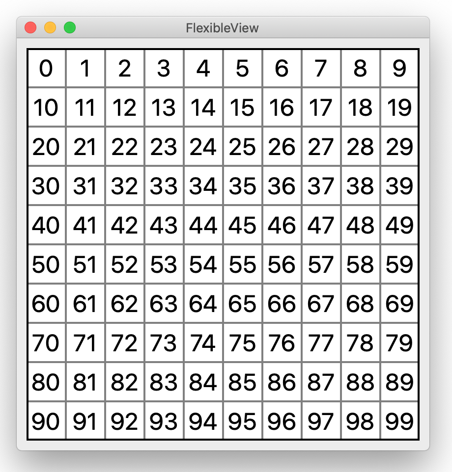
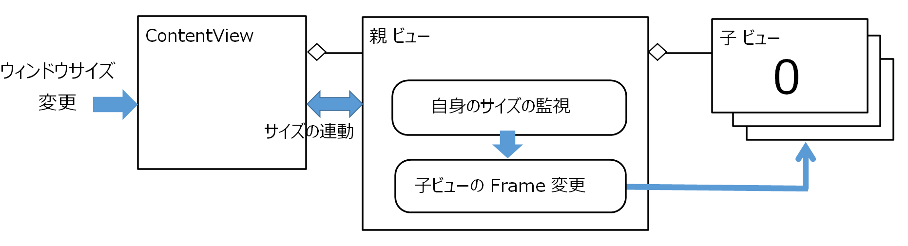
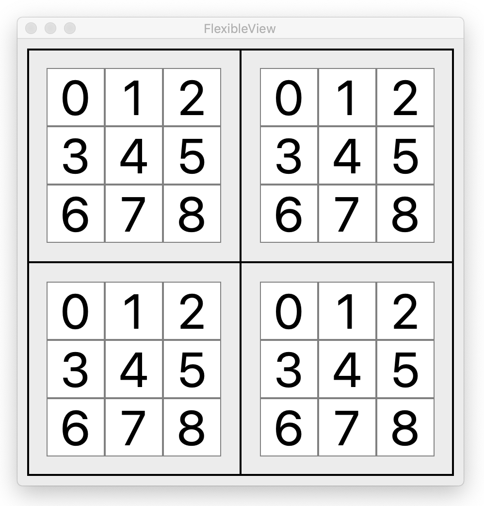

ウィンドウのサイズに連動しビューのサイズを変更する
ユーザが操作するウィンドウのサイズの変更に連動して内包するビューのサイズを自動的に変更する。同時にビューの表示している文字のフォントサイズも変更する。

画像をクリックすると動画になります。
クラス関連図
実装手順
ContentViewのサイズはウィンドウのサイズを変更すると自動的に変わる。親ビューは autoresizingMaskにより自身と ContentViewのサイズを連動させる。親ビューはキーバリュー監視機能を利用して自身のビューサイズの変更を監視し、変更されたら増減率を計算、それに基づいて親ビューが保持している全ての子ビューのサイズと表示位置を変更する。また子ビューが表示している文字列のフォントサイズも増減率に合わせて変更する。フォントサイズの倍率 ＝ ( 縦の増減率 x 横の増減率 ) の平方根
ソースコード
UAViewM.swift 親ビュー
UAViewS.swift 子ビュー
３階層のビュー構造

画像をクリックすると動画になります。
親・子・孫の３階層のビュー構造を作成する。親ビューの下に４個の子ビューを配置し、それぞれその下に数字を表示する９個の孫ビューを配置する。ウィンドウのサイズを変更すると、３層のビューが連動してサイズを変更する。基本の実装を機械的に積み上げるだけで階層はいくらでも増やすことができる。
ソースコード
UAViewL.swift 親ビュー
UAViewM.swift 子ビュー
UAViewS.swift 孫ビュー